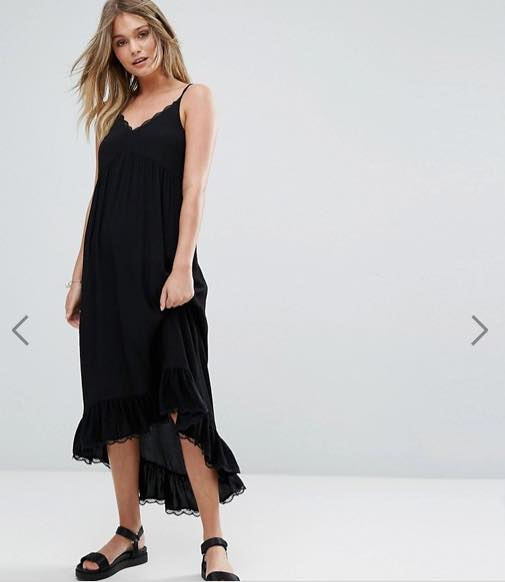

너무 오랜만에 블로그에 글을 쓰게 되었습니당;;
2월도 절반이상 지나갔네요;;
설연휴 잘 보내고 계신지 ;ㅂ;
원래 겨울에 일이 젤 많은편이긴 했는데 올해는 최고로 바빴습니다;;;
대충 11월 12월말까지 바쁘고 12월 크리스마스 연휴시작으로 바로 누워서 귤까먹으면서 폐인처럼 추리 소설/드라마 섭렵하는게 한해 마무리(....) 였건만 이번에는 그 바쁜일이 2월초까지 이어질줄 누가알았겠어 ;ㅂ;
바쁘다 한들 하루 8시간 이상 수면을 해야하는지라 잠은 꼬박꼬박 잤습니다 ㅋㅋ
밤새고 잠 안자는걸 너무 힘들어합니다 (학교다닐때 졸작할때도 잘건 다 자면서 작업한 인간;;)
그대신 깨어있는 시간에는 끊임없이 일 생각을 해야하니 너무 피곤하더라구요;;
예전에는 프로젝트 하나 끝나고 예쁜거 지르는 재미라도 있었는데
이제는 걍 비싸고 예쁜 아이템이 추가된 여전히 우울한 1인(...) 이었습니다;
그렇다고 쇼핑을 아예 안한건 아니고(....) ASOS에서 야곰야곰 충동구매도하고
Bloomingdale's 에서 코트도 사고 그랬더랍니다;;
최근의 집착은 mix / multi colour fur coat ^^;;;;
수요일 오후에 골든슬럼버 보구 드라마 비밀의숲 을 달리기 시작해서
토요일 킹키부츠 뮤지컬 보는걸로 연휴를 보냈습니다
그냥 아무생각없이 누워서 드라마보니 행복하더군욤 ;ㅂ;

ASOS에서 지른 River Island 슬립 드레스
레이어드 스타일링에 좋겠다 + 편하겠다 싶어서 주문했는데 대만족 입니다 :D
음휏휏 잘샀어
겨울내리 춥고 바쁘고 해서
너무 폐인으로 살았는데 날좀 따닷해지면 예쁜옷 입고 외출도 하고 그래야겠습니다
최소한의 사람꼴은 하고 살아야죠 ;ㅂ;